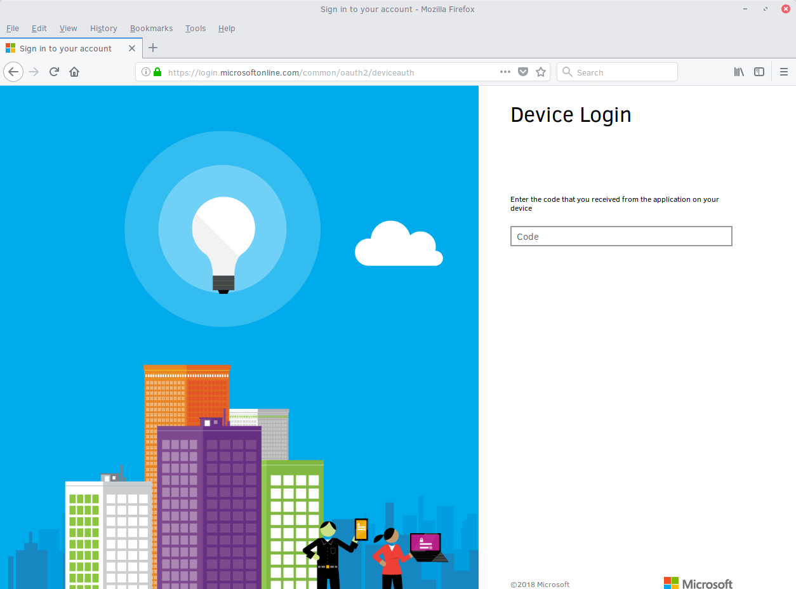

Run Clear Linux* OS using Microsoft Azure CLI 2.0
Clear Linux* OS is available for you to use in the Microsoft* Azure* marketplace and is offered with three different images, also known as a SKU.
- Clear Linux OS Basic - This SKU consists of a bare-bones system which can be used as a starting point for those wanting to explore and build out a system with additional software bundles of their choosing.
- Clear Linux OS Containers - This SKU comes with the containers-basic software bundle already installed.
- Clear Linux OS Machine-learning - This SKU comes pre-loaded with popular open source tools for developing machine learning applications.
You can access these images directly from your MS Azure dashboard through the Azure portal or by using the MS Azure CLI 2.0. If you do not already have an account set up with MS Azure, you can sign up for a MS Azure free account to access the Clear Linux OS VM images.
The Azure CLI offers the ability to create and manage resources in MS Azure from the command line. In this tutorial you learn to:
- Install the latest MS Azure CLI on your Clear Linux OS machine.
- Log into MS Azure using the CLI 2.0 interface.
- Create a MS Azure resource group.
- Locate the Clear Linux OS images.
- Create and log into the Clear Linux OS virtual machine.
- Stop and deallocate the Clear Linux OS VM and resources.
To use the MS Azure CLI 2.0 on your Clear Linux OS system, your system must have the following packages installed:
- Python 2.7 or later
- libffi
- OpenSSL 1.0.2
You can check to see what versions you have installed on your system by running the individual commands as follows:
python --version
python 2.7.12
openssl version
OpenSSL 1.0.2n 7 Dec 2017
ls -l /usr/lib64/libffi*
lrwxrwxrwx 1 root root 15 Jan 12 2017 /usr/lib64/libffi.so.6 -> libffi.so.6.0.4
-rwxr-xr-x 1 root root 38792 Jan 12 2017 /usr/lib64/libffi.so.6.0.4
If you do not have these packages installed on your Clear Linux OS system, install the sysadmin-basic software bundle using the swupd command:
sudo swupd bundle-add sysadmin-basic
注解
These instructions are for installing the MS Azure CLI 2.0 tools on a Clear Linux OS system. If you are installing the CLI on another platform, follow the instructions in the MS Azure Install Azure CLI tutorial for your specific operating system.
Install MS Azure CLI 2.0 on Clear Linux OS
To install the MS Azure CLI 2.0 on Clear Linux OS, use the curl command as follows:
curl -L https://aka.ms/InstallAzureCli | bashIf you get an error message from curl related to the -L parameter or an error message is generated that includes the text “Object Moved”, use the full URL instead of the aka.ms redirect address:
curl https://azurecliprod.blob.core.windows.net/install | bashThe installation script begins and prompts you several times during execution for information.
注解
The console output from the script displays your username instead of the [user] variable shown on this tutorial.
===> In what directory would you like to place the install? (leave blank to use '/home/[user]/lib/azure-cli'):Press the Enter key to accept the default or you can chose another directory to install the MS Azure CLI 2.0 tools into.
===> In what directory would you like to place the 'az' executable? (leave blank to use '/home/[user]/bin'):Press the Enter key to accept the default or you can chose another directory to install the az executable in.
The installation downloads and builds all required tools and when complete prompts you with:
===> Modify profile to update your $PATH and enable shell/tab completion now? (Y/n): YType Y and press the Enter key to allow this modification.
===> Enter a path to an rc file to update (leave blank to use '/home/[user]/.bashrc'):Press the Enter key to accept the default or enter the pathname to your
.bashrcfile. The installation completes with the final output shown below:-- Backed up '/home/[user].bashrc' to '/home/[user]/.bashrc.backup' -- Tab completion set up complete. -- If tab completion is not activated, verify that '/home/[user]/.bashrc' is sourced by your shell. -- -- ** Run `exec -l $SHELL` to restart your shell. ** -- -- Installation successful. -- Run the CLI with /home/[user]/bin/az --help
The installation program finishes and you must restart your shell for the changes to take effect. When the installation is successful, run the following command to restart your shell.
exec -l $SHELL
With the MS Azure CLI 2.0 executable successfully built and installed, run the az command.
az
The output from the az command is shown below:
/\
/ \ _____ _ _ __ ___
/ /\ \ |_ / | | | \'__/ _ \
/ ____ \ / /| |_| | | | __/
/_/ \_\/___|\__,_|_| \___|
Welcome to the cool new Azure CLI!
Here are the base commands:
account : Manage Azure subscription information.
acr : Manage Azure Container Registries.
acs : Manage Azure Container Services.
ad : Synchronize on-premises directories and manage Azure Active Directory
resources.
advisor : (PREVIEW) Manage Azure Advisor.
aks : Manage Kubernetes clusters.
appservice : Manage App Service plans.
backup : Commands to manage Azure Backups.
batch : Manage Azure Batch.
batchai : Batch AI.
billing : Manage Azure Billing.
cdn : Manage Azure Content Delivery Networks (CDNs).
cloud : Manage registered Azure clouds.
cognitiveservices: Manage Azure Cognitive Services accounts.
configure : Display and manage the Azure CLI 2.0 configuration. This command is
interactive.
consumption : Manage consumption of Azure resources.
container : (PREVIEW) Manage Azure Container Instances.
cosmosdb : Manage Azure Cosmos DB database accounts.
disk : Manage Azure Managed Disks.
dla : (PREVIEW) Manage Data Lake Analytics accounts, jobs, and catalogs.
dls : (PREVIEW) Manage Data Lake Store accounts and filesystems.
eventgrid : Manage Azure Event Grid topics and subscriptions.
extension : Manage and update CLI extensions.
feature : Manage resource provider features.
feedback : Loving or hating the CLI? Let us know!
find : Find Azure CLI commands.
functionapp : Manage function apps.
group : Manage resource groups and template deployments.
image : Manage custom virtual machine images.
interactive : Start interactive mode.
iot : (PREVIEW) Manage Internet of Things (IoT) assets.
keyvault : Safeguard and maintain control of keys, secrets, and certificates.
lab : Manage Azure DevTest Labs.
lock : Manage Azure locks.
login : Log in to Azure.
logout : Log out to remove access to Azure subscriptions.
managedapp : Manage template solutions provided and maintained by Independent Software
Vendors (ISVs).
monitor : Manage the Azure Monitor Service.
mysql : Manage Azure Database for MySQL servers.
network : Manage Azure Network resources.
policy : Manage resource policies.
postgres : Manage Azure Database for PostgreSQL servers.
provider : Manage resource providers.
redis : Access to a secure, dedicated Redis cache for your Azure applications.
reservations : Manage Azure Reservations.
resource : Manage Azure resources.
role : Manage user roles for access control with Azure Active Directory and service
principals.
sf : Manage and administer Azure Service Fabric clusters.
snapshot : Manage point-in-time copies of managed disks, native blobs, or other
snapshots.
sql : Manage Azure SQL Databases and Data Warehouses.
storage : Manage Azure Cloud Storage resources.
tag : Manage resource tags.
vm : Provision Linux or Windows virtual machines.
vmss : Manage groupings of virtual machines in an Azure Virtual Machine Scale Set
(VMSS).
webapp : Manage web apps.
Log into your Microsoft Azure account
With the az command properly installed and functional, login to your MS Azure account using the az login command shown below:
az login
The output from this command is:
To sign in, use a web browser to open the page https://aka.ms/devicelogin and enter the code BQ9MG442B to authenticate.Open your browser and enter the page https://aka.ms/devicelogin as shown in figure 1:
Figure 1: Microsoft Device Login
Enter the code BQ9MG442B to authenticate your device as shown in figure 2. The code BQ9MG442B is a random authentication code generated for each session login and will be different each time you log into MS Azure using the az login command.

Figure 2: Microsoft Device Login - Azure CLI
Once you enter the authentication code, the website changes to a screen to enter your existing Microsoft Azure credentials.
Log in with your existing MS Azure account credentials. Once complete, the browser screen changes again as shown in figure 3. The screen shows you have signed into the Microsoft Cross-platform Command Line Interface application on your device and you can close the window.

Figure 3: Microsoft Azure Cross-platform CLI
{kind=link}
The MS Azure CLI 2.0 interface is now active using your existing MS Azure account credentials.
Create a MS Azure resource group
To learn more about MS Azure resource groups, visit the Azure Resource Manager overview for an overview and detailed description of resources within MS Azure.
To create our new resource group, run the az group create ... command shown below to create a resource group named ClearResourceGroup using the -n parameter and locate it in the westus region using the -l parameter.
az group create -n ClearResourceGroup -l westus
When the command has completed, the output from this command is similar to the following:
{ "id": "/subscriptions/{unique-id}/resourceGroups/ClearResourceGroup", "location": "westus", "managedBy": null, "name": "ClearResourceGroup", "properties": { "provisioningState": "Succeeded" }, "tags": null }
Create and log into the Clear Linux OS virtual machine
For this tutorial, we are using the Clear Linux OS Basic SKU for our VM.
To locate the available Clear Linux OS Basic VM SKU images in the MS Azure marketplace, run the az vm image ... command:
az vm image list --offer clear-linux --sku basic --all --output table
This command may take some time to finish. The output lists all available Clear Linux OS Basic images available in the Microsoft Azure marketplace as shown below:
Offer Publisher Sku Urn Version -------------- ------------------- ---------------- ------------------------------------------------------------- --------- clear-linux-os clear-linux-project basic clear-linux-project:clear-linux-os:basic:15780.0.0 15780.0.0 clear-linux-os clear-linux-project basic clear-linux-project:clear-linux-os:basic:15960.0.0 15960.0.0 clear-linux-os clear-linux-project basic clear-linux-project:clear-linux-os:basic:16050.0.0 16050.0.0 clear-linux-os clear-linux-project basic clear-linux-project:clear-linux-os:basic:16150.0.0 16150.0.0 clear-linux-os clear-linux-project basic clear-linux-project:clear-linux-os:basic:16500.0.0 16500.0.0 clear-linux-os clear-linux-project basic clear-linux-project:clear-linux-os:basic:16810.0.0 16810.0.0 clear-linux-os clear-linux-project basic clear-linux-project:clear-linux-os:basic:18080.0.0 18080.0.0 clear-linux-os clear-linux-project basic clear-linux-project:clear-linux-os:basic:18620.0.0 18620.0.0 clear-linux-os clear-linux-project basic clear-linux-project:clear-linux-os:basic:18860.0.0 18860.0.0
注解
The output list shows current offerings. New versions are added to the MS Azure marketplace all the time. To reference the latest version of an image, you can use the version label latest when specifying an image.
The information shown in the Urn column lists the Publisher:Offer:Sku:Version for each image available and this is the information we want to create the Clear Linux OS Basic VM. Since we are creating a Clear Linux OS Basic VM, highlight the clear-linux-project:clear-linux-os:basic: string and copy it to your clipboard. Use the label latest instead of referencing a specific version.
Create the new Clear Linux OS Basic VM. Run the az vm create ... command using the URN :clear-linux-project:clear-linux-os:basic:latest that we copied to the clipboard on the previous step.
az vm create --resource-group ClearResourceGroup --name ClearVM --image clear-linux-project:clear-linux-os:basic:latest --generate-ssh-keys
注解
If you have already defined your public/private SSH key pair and they are stored in your
$HOME/.sshdirectory, you do not need to include the –generate-ssh-keys option.Your output from this command will look similar to this output, where [user] is your user name:
SSH key files '/home/[user]/.ssh/id_rsa' and '/home/[user]/.ssh/id_rsa.pub' have been generated under ~/.ssh to allow SSH access to the VM. If using machines without permanent storage, back up your keys to a safe location. running... { "fqdns": "", "id": "/subscriptions/{unique-id}/resourceGroups/ClearResourceGroup/providers/Microsoft.Compute/virtualMachines/ClearVM", "location": "westus", "macAddress": "00-0D-3A-37-C7-59", "powerState": "VM running", "privateIpAddress": "10.0.0.4", "publicIpAddress": "13.91.4.245", "resourceGroup": "ClearResourceGroup", "zones": "" }
Take note of the public IP address from the output.
Login into the new Clear Linux OS Basic VM, run the ssh command with the public IP address obtained from the previous step as shown:
ssh [user]@13.91.4.245
You may see the following message about the authenticity of the host. If this appears, type yes to proceed connecting to your new Clear Linux OS VM.
The authenticity of host '13.91.4.245 (13.91.4.245)' can't be established. RSA key fingerprint is SHA256:{unique-number}. Are you sure you want to continue connecting (yes/no)? yes Warning: Permanently added '13.91.4.245' (RSA) to the list of known hosts. [user]@ClearVM ~ $
You are now logged into your new Clear Linux OS VM as [user], where [user] is your user name. To check which software bundles are included with this VM image, run the sudo swupd bundle-list command inside the VM:
sudo swupd bundle-list
The output shown should be similar to:
swupd-client bundle list 3.14.1 Copyright (C) 2012-2017 Intel Corporation bootloader editors kernel-hyperv network-basic openssh-server os-cloudguest-azure os-core os-core-update perl-basic python-basic python3-basic storage-utils sysadmin-basic Current OS version: 19600
When you are finished using your new Clear Linux OS VM, type exit to close the SSH terminal and logout.
Stop and deallocate the Clear Linux OS VM and resources
When you finish using your new Clear Linux OS instance, you must stop the VM and deallocate the resources in your resource group. If you only stop a VM, the OS image shuts down but the resources associated with it in your resource group remain allocated and incurring charges. For instance, if you stop and then later start the VM using the az vm start... without deallocating the resources, the IP address is retained and you can access the VM using that same IP address. To release the resources associated with the VM and stop incurring charges for them, you must deallocate the resources as well.
At the command prompt, enter the az vm stop... command as follows:
az vm stop --resource-group ClearResourceGroup --name ClearVM
This will stop the VM and then output text similar to:
{ "endTime": "2017-12-13T23:04:02.346676+00:00", "error": null, "name": "{unique-name}", "startTime": "2017-12-13T23:03:59.018536+00:00", "status": "Succeeded" }
Once the VM stops, deallocate the VM resources to stop incurring charges for the Clear Linux OS instance. Enter the following command:
az vm deallocate --resource-group ClearResourceGroup --name ClearVM
Congratulations!
You are up and running with Clear Linux OS on MS Azure using the Azure CLI 2.0 command line tools.
Next steps
To see use cases you can fulfill with your Clear Linux OS instance, visit our tutorials section.
For additional information visit the Clear Linux OS Azure Partner Mini Case Study and the Azure Partner Datasheet.
To learn more about the MS Azure CLI 2.0 tool and options that are available, visit the MS Azure documentation and tutorials website.